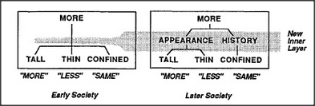

What should one do when different kinds of knowledge don't agree? It sometimes helps to place them in some order of priority, but as we've seen, that can still lead to mistakes. How can we make our system sensitive to different circumstances? The secret is to use the principle of noncompromise and look for help from other agencies! For help with comparing quantities, we'll need to add new administrative agents to our Society-of-More.
The new Appearance administrator is designed to say more when the agent Tall is active, to say less when the agent Thin is active,
and to say nothing at all when something appears both taller and thinner. Then the other new administrator, History, makes the decision on the basis of what Confined says.
This explanation of the difference between the older and younger children was first proposed by Seymour Papert in the 1960s, when we first started to explore society of mind ideas. Most previous theories had tried to explain Piaget's experiments by suggesting that children develop different kinds of reasoning as time goes by. That certainly is true, but the importance of Papert's conception is in emphasizing not merely the ingredients of reasoning, but how they're organized: a mind cannot really grow very much merely by accumulating knowledge. It must also develop better ways to use what it already knows. That principle deserves a name.
Papert's Principle: Some of the most crucial steps in mental growth are based not simply on acquiring new skills, but on acquiring new administrative ways to use what one already knows.
Our two new middle-level managers illustrate this idea: Appearance and History form a new, intermediate layer that groups together certain sets of lower-level skills. The choice of agents for those groups is absolutely critical. The system will work quite well if we group Tall and Thin together, so that Confined can take control when they conflict. But it would only make things worse if we were to group Tall and Confined together! Then what decides which groups to form? Papert's principle suggests that the processes which assemble agents into groups must somehow exploit relationships among the skills of those agents. For example, because Tall and Thin are more similar in character to one another than to Confined, it makes sense to group them more closely together in the administrative hierarchy.